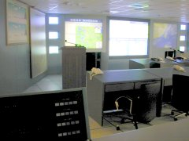

防洪指揮中心，從全國各地匯集各地的雨量，水庫水位，各種訊息。 
聽起來就很先進，對外網路是T1，但是....資料收集是用MODEM 撥接。 @_@
嗯，如果又來個全國大停電，這邊還自備發電機。但， 我有點懷疑此時網路還通嗎？ @_@
最有趣的，是我並不是�堶悸漱u程師，而是『工讀生』。:P
我並不介意當工讀生，因為....有點涼，離家近， 而且在那邊還能更新自己的網頁。叫我工讀生，給我工讀生的薪水， 我就會作好工讀生份量的部份。真是皆大歡喜∼ :D
把全部的系統藉測試之名開起來，一個正中超大投影螢幕， 加上左右各一個中型螢幕，最兩邊各有上至下三個小螢幕，第一次看覺得還蠻壯觀的。